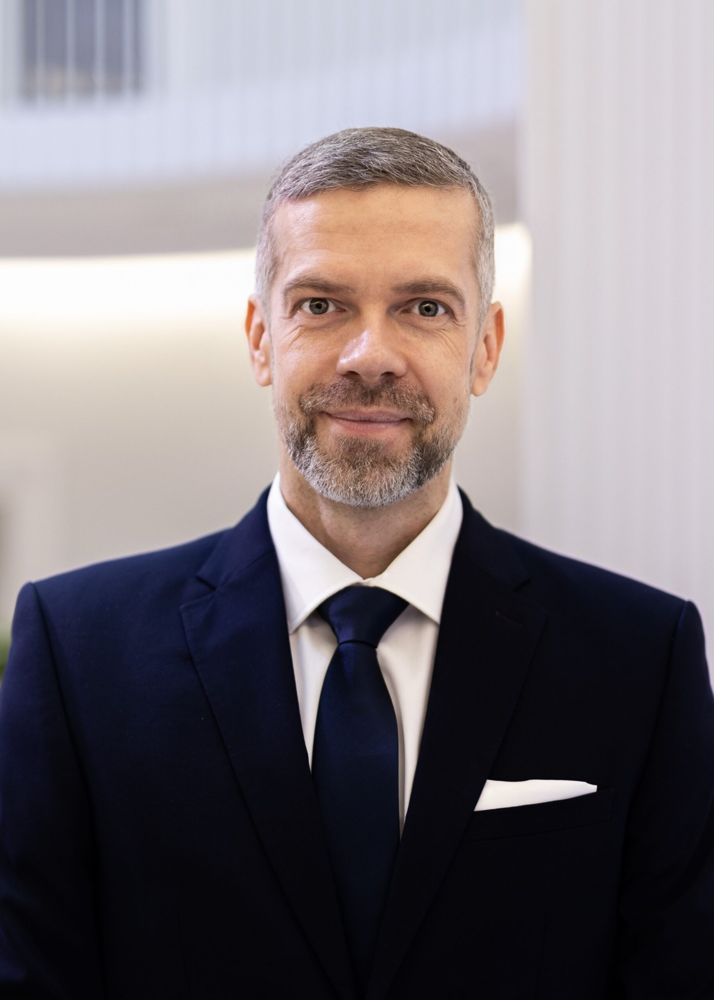

Dr Ingmar Lindström
MD · Ettevõtja
Haridus, taust ja ettevõtted
Tartu Ülikool · Arstiteaduskond, 2001
Eesti Diplomaatide Kool · 2002
Tartu Ülikool · Perearsti residentuur, 2005
EBS · Tervishoiujuhtide Arenguprogramm
Pikaajaline arstipraksis Eestis ja Soomes. Sealhulgas vastutava arstina Soome esmatasandi kliinikutes ning perearstina Tallinnas.
Harvard Business Review Advisory Council liige.
Valvekliinik Perearstid ja eriarstid, ultraheli, günekoloogia, väikeprotseduurid, vaimne tervis ja Concierge teenus Ülemiste Tervisemajas. Avatud kuus päeva nädalas, sealhulgas õhtuti.
Perekliinik Perearstikeskus mitme filiaaliga Tallinnas.
SL Meedik Concierge Kliinik Tallinnas.
Élan Clinic Kaalulangetuse ja pikaealisuse meditsiin Tallinnas.
Sentifoli & Lindström OÜ Tervishoiu konsultatsiooni- ja venture-studio. Omab TT24 portaali.